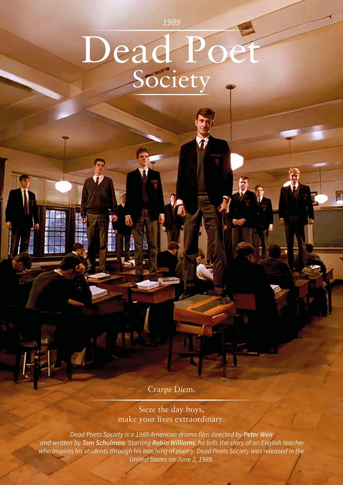

- Year: 1989
- Director: Peter Weir
- Starring: Robin Williams, Robert Sean Leonard, Ethan Hawke, Josh Charles, Gale Hansen
- Duration: 128 mins
- Country: USA
Review by Aashi Perera
Directed by Peter Weir and released in 1989, Dead Poets Society remains a profoundly moving exploration of creativity, conformity, and the courage to pursue one’s true calling. Set in the austere halls of Welton Academy, an elite all boys preparatory school in 1950s Vermont, the film introduces John Keating (Robin Williams), an unconventional English teacher whose unorthodox methods challenge the rigid traditions of the institution.
Keating’s arrival marks a turning point for his students. Encouraging them to “seize the day” (carpe diem), he urges the young men to stand on their desks, rip out the mechanical introductions in their poetry textbooks, and embrace literature as a living force. Through secret midnight meetings of the revived Dead Poets Society, students such as the introspective Todd Anderson, the ambitious Neil Perry, and the lovestruck Knox Overstreet begin to discover their own voices, writing poetry, performing Shakespeare, and daring to fall in love.
The film’s visual language is masterful. Cinematographer John Seale captures the golden hues of autumn, the solemnity of oak-paneled classrooms, and the quiet rebellion of snow dusted forests with breathtaking clarity. Maurice Jarre’s stirring score, particularly the haunting bagpipe motifs, amplifies the emotional weight of each pivotal moment. Robin Williams delivers a restrained yet electrifying performance, balancing quiet wisdom with bursts of inspiration. His Keating is not merely a teacher but a catalyst for self discovery.
Yet the film does not shy away from the cost of defiance. The institution and the parents who uphold it demand obedience above all else. The tragic consequences of this clash serve as a sobering reminder that societal expectations can crush even the brightest spirits.
As a 21-year old student in 2025, I find Keating’s central question “What will your verse be?” more relevant than ever. In an era dominated by grades, career paths, and algorithmic approval, the film is a powerful antidote to complacency. It reminds us that passion is not a distraction from responsibility, but its very foundation.
Verdict: 9.5/10
A cinematic masterpiece that continues to inspire generations to think, feel, and live boldly. “O Captain! My Captain!” – a salute to a film that dares us to write our own stories.
November 15th 2025